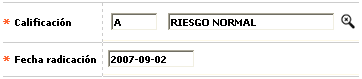

Novedad calificación tarjeta
En este formulario invocado desde la opción ingreso de novedades, (issuer) la entidad puede registrar la calificación asignada a la obligación.

Descripción de campos
Calificación |
Campo obligatorio que cuenta con lista de valores de la cual se puede seleccionar la calificación que la entidad desea asociar a la tarjeta o crédito. |
Fecha de radicación |
En este campo obligatorio se registra en formato YYYY-MM-DD la fecha en la cual se solicitó la actualización de la calificación para la tarjeta y que puede ser una fecha anterior a la actual del sistema, facilitando el ingreso de novedades de fechas anteriores. |